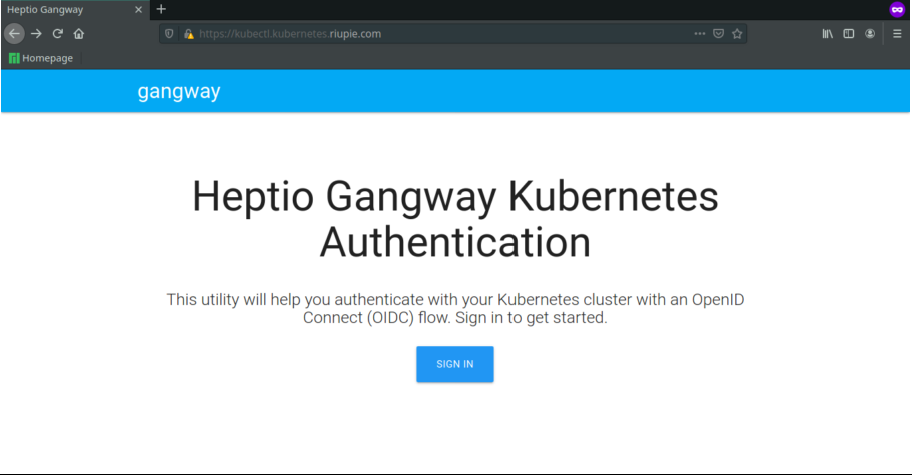
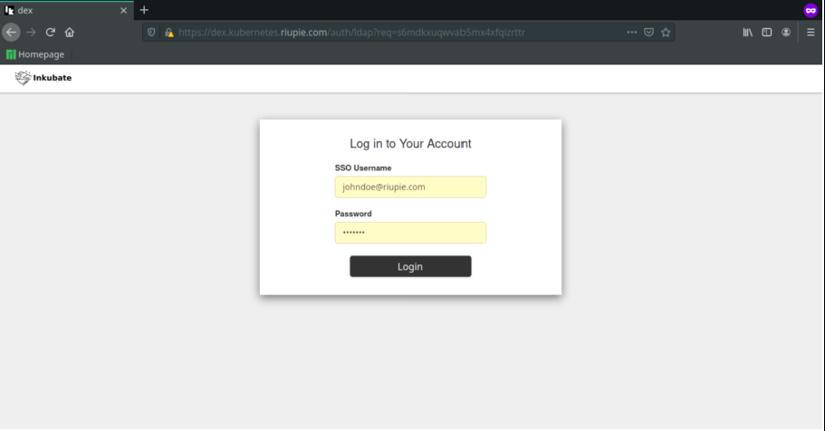
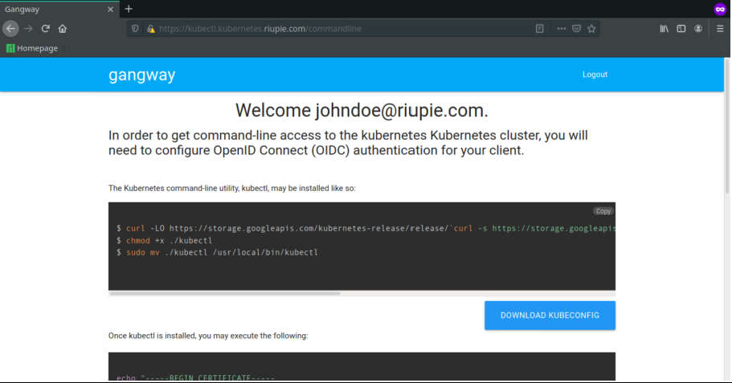

Environment
# Servers
ag-k8s-master0 : 10.54.54.10/24 (Kubernetes Master)
ag-k8s-worker0 : 10.54.54.20/24 (Kubernetes Worker)
ag-k8s-worker1 : 10.54.54.21/24 (Kubernetes Worker)
ag-k8s-ldap : 10.54.54.30/24 (LDAP Server, DNS Server)
# Packages Release
Ubuntu 18.04
Kubernetes 1.19
OpenLDAP 2.4
Part 1: Pre-Flight
1. Setup DNS Server
For simplicity, I used dnsmasq with minimal configuration. You can use your prefered DNS Server (ex: bind9).
1.1. Install DNSMASQ
root@ag-k8s-ldap:~# apt -y install dnsmasq
1.2. Configure Dnsmasq. Uncomment line below.
root@ag-k8s-ldap:~# vim /etc/dnsmasq.conf
domain-needed
bogus-priv
strict-order
root@ag-k8s-ldap:~# systemctl restart dnsmasq
1.3. Add DNS Records on /etc/hosts.
10.54.54.10 dex.kubernetes.riupie.com kubectl.kubernetes.riupie.com dashboard.kubernetes.riupie.com
10.54.54.30 ldap.riupie.com
1.4. Add DNS Server to each Kubernetes nodes.
ubuntu@ag-k8s-master0:~$ sudo vim /etc/netplan/50-cloud-init.yaml
network:
ethernets:
ens3:
addresses:
- 10.54.54.10/24
gateway4: 10.54.54.1
nameservers:
addresses:
- 10.54.54.30
version: 2
ubuntu@ag-k8s-master0:~$ sudo netplan apply
1.5. Verify DNS Server
ubuntu@ag-k8s-master0:~$ nslookup ldap.riupie.com
Server: 127.0.0.53
Address: 127.0.0.53#53
Non-authoritative answer:
Name: ldap.riupie.com
Address: 10.54.54.30
2. Setup LDAP Server
2.1. Install OpenLDAP
root@ag-k8s-ldap:~# apt -y install slapd ldap-utils -y
+--------------------------| Configuring slapd |-------------------------+
| Please enter the password for the admin entry in your LDAP directory. |
| |
| Administrator password: |
| |
| ********______________________________________________________________ |
| |
| <Ok> |
| |
+------------------------------------------------------------------------+
2.2. Configure LDAP Server
root@ag-k8s-ldap:~# dpkg-reconfigure slapd
2.3. Verify configuration
root@ag-k8s-ldap:~# slapcat
dn: dc=riupie,dc=com
objectClass: top
objectClass: dcObject
objectClass: organization
o: Riupie
dc: riupie
structuralObjectClass: organization
entryUUID: d89b3fe8-8c51-103a-8b49-d95647de1143
creatorsName: cn=admin,dc=riupie,dc=com
createTimestamp: 20200916101927Z
entryCSN: 20200916101927.851031Z#000000#000#000000
modifiersName: cn=admin,dc=riupie,dc=com
modifyTimestamp: 20200916101927Z
dn: cn=admin,dc=riupie,dc=com
objectClass: simpleSecurityObject
objectClass: organizationalRole
cn: admin
description: LDAP administrator
userPassword:: e1NTSEF9UGM2NjNPT0M3MXhwMVMvRGZyVCszSFNBeEpzM1ZBdXA=
structuralObjectClass: organizationalRole
entryUUID: d89b72ba-8c51-103a-8b4a-d95647de1143
creatorsName: cn=admin,dc=riupie,dc=com
createTimestamp: 20200916101927Z
entryCSN: 20200916101927.852372Z#000000#000#000000
modifiersName: cn=admin,dc=riupie,dc=com
modifyTimestamp: 20200916101927Z
2.4. Add initial data for Kubernetes User
ubuntu@ag-k8s-ldap:~$ vim k8s.ldif
dn: ou=People,dc=riupie,dc=com
objectClass: organizationalUnit
ou: People
dn: cn=jane,ou=People,dc=riupie,dc=com
objectClass: person
objectClass: inetOrgPerson
sn: doe
cn: jane
mail: janedoe@riupie.com
uid: jane
userPassword: jane@123
dn: cn=john,ou=People,dc=riupie,dc=com
objectClass: person
objectClass: inetOrgPerson
sn: doe
cn: john
mail: johndoe@riupie.com
uid: john
userPassword: john@123
dn: ou=Groups,dc=riupie,dc=com
objectClass: organizationalUnit
ou: Groups
dn: cn=admins,ou=Groups,dc=riupie,dc=com
objectClass: groupOfNames
cn: admins
member: cn=john,ou=People,dc=riupie,dc=com
dn: cn=developers,ou=Groups,dc=riupie,dc=com
objectClass: groupOfNames
cn: developers
member: cn=jane,ou=People,dc=riupie,dc=com
#Insert into LDAP database
ubuntu@ag-k8s-ldap:~$ ldapadd -cx -D cn=admin,dc=riupie,dc=com -W -f k8s.ldif
Part 2: Bootstrapping Kubernetes Cluster
3. Deploy Kubernetes Cluster (run as regular user)
3.1. Install Docker on all Kubernetes nodes
sudo apt-get update
sudo apt install docker.io -y
sudo systemctl enable docker
sudo systemctl start docker
sudo systemctl status docker
3.2. Add kubernetes repository on all Kubernetes nodes
curl -s https://packages.cloud.google.com/apt/doc/apt-key.gpg | sudo apt-key add
sudo apt-add-repository "deb http://apt.kubernetes.io/ kubernetes-xenial main"
3.3. Install Kubernetes Installation Tools on all Kubernetes nodes
sudo apt install kubeadm kubelet kubectl -y
sudo apt-mark hold kubeadm kubelet kubectl
kubeadm version
3.4. Disable Swap Memory on all Kubernetes nodes
sudo swapoff –a
3.5. Initialize Kubernetes on Master Node
ubuntu@ag-k8s-master0:~$ sudo kubeadm init --pod-network-cidr=192.168.0.0/16
3.6. Create cluster directory on Master Node
ubuntu@ag-k8s-master0:~$ mkdir -p $HOME/.kube
ubuntu@ag-k8s-master0:~$ sudo cp -i /etc/kubernetes/admin.conf $HOME/.kube/config
ubuntu@ag-k8s-master0:~$ sudo chown $(id -u):$(id -g) $HOME/.kube/config
3.7. Install Calico CNI from Master Node
ubuntu@ag-k8s-master0:~$ curl https://docs.projectcalico.org/manifests/calico.yaml -O
ubuntu@ag-k8s-master0:~$ kubectl apply -f calico.yaml
3.8. Print join command from Master Node
ubuntu@ag-k8s-master0:~$ sudo kubeadm token create --print-join-command
kubeadm join 10.54.54.10:6443 --token 2a80cg.tatnw7n3jaqsio5c --discovery-token-ca-cert-hash sha256:70c6d0e5c2c9d3bfab4797dc9177b61136e5e690035042b8bdac58776f55818a
3.9. Join nodes. Execute on each worker nodes
kubeadm join 10.54.54.10:6443 --token ksgb87.m58b7ov99tc6p47p --discovery-token-ca-cert-hash sha256:70c6d0e5c2c9d3bfab4797dc9177b61136e5e690035042b8bdac58776f55818a
3.10. Verify cluster
ubuntu@ag-k8s-master0:~$ kubectl get nodes
ubuntu@ag-k8s-master0:~$ kubectl cluster-info
3.11. Install Helm 3 from Master Node
ubuntu@ag-k8s-master0:~$ sudo apt-get install apt-transport-https -y
ubuntu@ag-k8s-master0:~$ echo "deb https://baltocdn.com/helm/stable/debian/ all main" | sudo tee /etc/apt/sources.list.d/helm-stable-debian.list
ubuntu@ag-k8s-master0:~$ sudo apt-get update
ubuntu@ag-k8s-master0:~$ sudo apt-get install helm
Part 3: Deploy Cert Manager
4. Install NGINX Controller Community
4.1. Add NGINX Controller Community helm repo
ubuntu@ag-k8s-master0:~$ helm repo add ingress-nginx https://kubernetes.github.io/ingress-nginx
ubuntu@ag-k8s-master0:~$ helm install nginx-controller-community ingress-nginx/ingress-nginx
4.2. Expose NGINX Controller as externalIPs (only needed if you have no Service Type LoadBalancer support)
ubuntu@ag-k8s-master0:~$ kubectl edit svc nginx-controller-community-ingress-nginx-controller
* add externalIP on thi section
...
selector:
app: ingress-nginx
externalIPs:
- IP-MASTER-NODE
...
5. Install cert-manager
5.1. Generate Self Signed cert for *.kubernetes.riupie.com domain
ubuntu@ag-k8s-master0:~$ openssl req -newkey rsa:4096 \
-x509 \
-sha256 \
-days 3650 \
-nodes \
-out riupie.com.crt \
-keyout riupie.com.key
ubuntu@ag-k8s-master0:~$ mkdir .cert
ubuntu@ag-k8s-master0:~$ mv riupie.com.* .cert
#Share root CA file (riupie.com.crt) to each Kubernetes nodes. For example I do this on master nodes
ubuntu@ag-k8s-master0:~$ sudo cp .cert/riupie.crt /etc/ssl/certs/riupie.com.pem
ubuntu@ag-k8s-master0:~$ sudo update-ca-certificates
5.2. Create namespaces
ubuntu@ag-k8s-master0:~$ kubectl create namespace cert-manager
5.3 Add helm repo
ubuntu@ag-k8s-master0:~$ helm repo add jetstack https://charts.jetstack.io
ubuntu@ag-k8s-master0:~$ helm repo update
5.4. Install cert-manager+CRD
ubuntu@ag-k8s-master0:~$ helm install cert-manager jetstack/cert-manager --namespace cert-manager --version v1.0.1 --set installCRDs=true
5.5. Check pods
ubuntu@ag-k8s-master0:~$ kubectl get pods --namespace cert-manager
5.6 Create secret for CA Root
ubuntu@ag-k8s-master0:~$ kubectl -n cert-manager create secret tls ssc-tls-secret --key=/home/ubuntu/.cert/riupie.com.key --cert=/home/ubuntu/.cert/riupie.com.crt
5.7. Create Issuer
ubuntu@ag-k8s-master0:~$ mkdir cert-manager
ubuntu@ag-k8s-master0:~$ cd cert-manager
ubuntu@ag-k8s-master0:~/cert-manager$ vim cluster-issuer.yml
---
apiVersion: cert-manager.io/v1alpha2
kind: ClusterIssuer
metadata:
name: tls-ca-issuer
namespace: cert-manager
spec:
ca:
secretName: ssc-tls-secret
ubuntu@ag-k8s-master0:~/cert-manager$ kubectl create -f cluster-issuer.yml
Part 4: Deploy Dex
6. Deploy Dex Deployment and Resource
6.1. Create auth-system namespace
kubectl create ns auth-system
6.2. Create YAML File for Dex Deployment
cd
mkdir auth-system
cd auth-system
vim dex-system.yml
---
apiVersion: v1
kind: ServiceAccount
metadata:
labels:
app: dex
name: dex
namespace: auth-system
---
apiVersion: rbac.authorization.k8s.io/v1
kind: ClusterRole
metadata:
name: dex
namespace: auth-system
rules:
- apiGroups: ["dex.coreos.com"]
resources: ["*"]
verbs: ["*"]
- apiGroups: ["apiextensions.k8s.io"]
resources: ["customresourcedefinitions"]
verbs: ["create"]
---
apiVersion: rbac.authorization.k8s.io/v1
kind: ClusterRoleBinding
metadata:
name: dex
namespace: auth-system
roleRef:
apiGroup: rbac.authorization.k8s.io
kind: ClusterRole
name: dex
subjects:
- kind: ServiceAccount
name: dex
namespace: auth-system
---
apiVersion: v1
kind: ConfigMap
metadata:
name: dex
namespace: auth-system
data:
config.yaml: |
issuer: https://dex.kubernetes.riupie.com
web:
http: 0.0.0.0:5556
frontend:
theme: custom
telemetry:
http: 0.0.0.0:5558
staticClients:
- id: oidc-auth-client
redirectURIs:
- 'https://kubectl.kubernetes.riupie.com/callback'
- 'http://dashboard.kubernetes.riupie.com/oauth2/callback'
name: 'oidc-auth-client'
secret: XmT7EHo27skGchX0yLQNTYXibm3aNkx5
connectors:
- type: ldap
id: ldap
name: LDAP
config:
host: ldap.riupie.com:389
insecureNoSSL: true
insecureSkipVerify: true
bindDN: CN=admin,DC=riupie,DC=com
bindPW: mysecret #Add Administrator password
usernamePrompt: SSO Username
userSearch:
baseDN: OU=People,DC=riupie,DC=com
filter: "(objectClass=person)"
username: mail
idAttr: uid
emailAttr: mail
nameAttr: cn
groupSearch:
baseDN: OU=Groups,DC=riupie,DC=com
filter: "(objectClass=groupOfNames)"
userAttr: DN
groupAttr: member
nameAttr: cn
oauth2:
skipApprovalScreen: true
storage:
type: kubernetes
config:
inCluster: true
---
apiVersion: apps/v1
kind: Deployment
metadata:
labels:
app: dex
name: dex
namespace: auth-system
spec:
replicas: 1
selector:
matchLabels:
app: dex
strategy:
rollingUpdate:
maxSurge: 1
maxUnavailable: 1
type: RollingUpdate
template:
metadata:
labels:
app: dex
revision: "1"
spec:
initContainers:
- name: dl-theme
image: alpine/git
command:
- git
- clone
- "https://github.com/sguyennet/dex-inkubate-branding.git"
- /theme
volumeMounts:
- name: theme
mountPath: /theme/
containers:
- command:
- /usr/local/bin/dex
- serve
- /etc/dex/cfg/config.yaml
image: quay.io/dexidp/dex:v2.24.0
imagePullPolicy: IfNotPresent
name: dex
ports:
- containerPort: 5556
name: http
protocol: TCP
resources: {}
terminationMessagePath: /dev/termination-log
terminationMessagePolicy: File
volumeMounts:
- mountPath: /etc/dex/cfg
name: config
- mountPath: /web/themes/custom/
name: theme
dnsPolicy: ClusterFirst
serviceAccountName: dex
restartPolicy: Always
schedulerName: default-scheduler
securityContext: {}
terminationGracePeriodSeconds: 30
volumes:
- configMap:
defaultMode: 420
items:
- key: config.yaml
path: config.yaml
name: dex
name: config
- name: theme
emptyDir: {}
---
apiVersion: v1
kind: Service
metadata:
name: dex
namespace: auth-system
spec:
selector:
app: dex
ports:
- name: dex
port: 5556
protocol: TCP
targetPort: 5556
---
apiVersion: networking.k8s.io/v1beta1
kind: Ingress
metadata:
name: dex-ingress
namespace: auth-system
annotations:
kubernetes.io/ingress.class: "nginx"
cert-manager.io/cluster-issuer: "tls-ca-issuer"
# nginx.ingress.kubernetes.io/ssl-redirect: "false"
ingress.kubernetes.io/force-ssl-redirect: "true"
spec:
tls:
- hosts:
- dex.kubernetes.riupie.com
secretName: dex
rules:
- host: dex.kubernetes.riupie.com
http:
paths:
- backend:
serviceName: dex
servicePort: 5556
kubectl create -f dex-system.yml
6.3. Verify dex deployment.
ubuntu@ag-k8s-master0:~/auth-system$ curl https://dex.kubernetes.riupie.com/.well-known/openid-configuration
{
"issuer": "https://dex.kubernetes.riupie.com",
"authorization_endpoint": "https://dex.kubernetes.riupie.com/auth",
"token_endpoint": "https://dex.kubernetes.riupie.com/token",
"jwks_uri": "https://dex.kubernetes.riupie.com/keys",
"userinfo_endpoint": "https://dex.kubernetes.riupie.com/userinfo",
"response_types_supported": [
"code"
],
"subject_types_supported": [
"public"
],
"id_token_signing_alg_values_supported": [
"RS256"
],
"scopes_supported": [
"openid",
"email",
"groups",
"profile",
"offline_access"
],
"token_endpoint_auth_methods_supported": [
"client_secret_basic"
],
"claims_supported": [
"aud",
"email",
"email_verified",
"exp",
"iat",
"iss",
"locale",
"name",
"sub"
]
}
6.4. Configure Kubernetes API
vim /etc/kubernetes/manifests/kube-apiserver.yaml
...
spec:
containers:
- command:
- kube-apiserver
....
- --oidc-issuer-url=https://dex.kubernetes.riupie.com
- --oidc-client-id=oidc-auth-client
- --oidc-username-claim=email
- --oidc-groups-claim=groups
...
6.5. Wait for kube-api pods to restart
7. Deploy Gangway
7.1. Create secret key for Gangway
kubectl -n auth-system create secret generic gangway-key --from-literal=sesssionkey=$(openssl rand -base64 32)
7.2. Create Gangway YAML deployment
cd
cd auth-system
vim gangway-system.yml
---
apiVersion: v1
kind: ConfigMap
metadata:
name: gangway
namespace: auth-system
data:
gangway.yaml: |
clusterName: "kubernetes"
apiServerURL: "https://10.54.54.10:6443"
authorizeURL: "https://dex.kubernetes.riupie.com/auth"
tokenURL: "https://dex.kubernetes.riupie.com/token"
clientID: "oidc-auth-client"
clientSecret: "XmT7EHo27skGchX0yLQNTYXibm3aNkx5"
redirectURL: "https://kubectl.kubernetes.riupie.com/callback"
scopes: ["openid", "profile", "email","groups", "offline_access"]
usernameClaim: "email"
emailClaim: "email"
trustedCAPath: "/cacerts/tls.crt"
---
apiVersion: apps/v1
kind: Deployment
metadata:
name: gangway
namespace: auth-system
labels:
app: gangway
spec:
replicas: 1
selector:
matchLabels:
app: gangway
strategy:
template:
metadata:
labels:
app: gangway
revision: "1"
spec:
containers:
- name: gangway
image: gcr.io/heptio-images/gangway:v3.2.0
imagePullPolicy: Always
command: ["gangway", "-config", "/gangway/gangway.yaml"]
env:
- name: GANGWAY_SESSION_SECURITY_KEY
valueFrom:
secretKeyRef:
name: gangway-key
key: sesssionkey
ports:
- name: http
containerPort: 8080
protocol: TCP
resources:
requests:
cpu: "100m"
memory: "100Mi"
limits:
cpu: "100m"
memory: "100Mi"
volumeMounts:
- name: gangway
mountPath: /gangway/
- name: ca
mountPath: /cacerts/
livenessProbe:
httpGet:
path: /
port: 8080
initialDelaySeconds: 20
timeoutSeconds: 1
periodSeconds: 60
failureThreshold: 3
readinessProbe:
httpGet:
path: /
port: 8080
timeoutSeconds: 1
periodSeconds: 10
failureThreshold: 3
volumes:
- name: gangway
configMap:
name: gangway
- name: ca
secret:
secretName: dex
---
kind: Service
apiVersion: v1
metadata:
name: gangway-svc
namespace: auth-system
labels:
app: gangway
spec:
type: ClusterIP
ports:
- name: "http"
protocol: TCP
port: 80
targetPort: "http"
selector:
app: gangway
---
apiVersion: networking.k8s.io/v1beta1
kind: Ingress
metadata:
name: gangway
namespace: auth-system
annotations:
kubernetes.io/ingress.class: "nginx"
cert-manager.io/cluster-issuer: "tls-ca-issuer"
# nginx.ingress.kubernetes.io/ssl-redirect: "true"
nginx.ingress.kubernetes.io/force-ssl-redirect: "true"
spec:
tls:
- hosts:
- kubectl.kubernetes.riupie.com
secretName: gangway
rules:
- host: kubectl.kubernetes.riupie.com
http:
paths:
- backend:
serviceName: gangway-svc
servicePort: http
kubectl create -f gangway-system.yml
7.4. Verify dex and gangway pods
ubuntu@ag-k8s-master0:~$ kubectl get pods -n auth-system
NAME READY STATUS RESTARTS AGE
dex-74fb858546-5jccf 1/1 Running 0 5d15h
gangway-64b4788d5c-7tdcr 1/1 Running 0 5d15h
7.5 Create RBAC for admins Group
vim rbac-admin.yml
---
apiVersion: rbac.authorization.k8s.io/v1
kind: ClusterRoleBinding
metadata:
name: admin-user
roleRef:
apiGroup: rbac.authorization.k8s.io
kind: ClusterRole
name: cluster-admin
subjects:
- kind: Group
name: admins
kubectl create -f rbac-admins.yml
7.6. Create RBAC for developers Group
LDAP users in group developers only have read access.
vim rbac-dev.yml
---
apiVersion: rbac.authorization.k8s.io/v1
kind: ClusterRoleBinding
metadata:
name: dev-user
roleRef:
apiGroup: rbac.authorization.k8s.io
kind: ClusterRole
name: view
subjects:
- kind: Group
name: developers
kubectl create -f rbac-dev.yml
7.7. Accesing Gangway
Access to https://kubectl.kubernetes.riupie.com then login using johndoe user.   